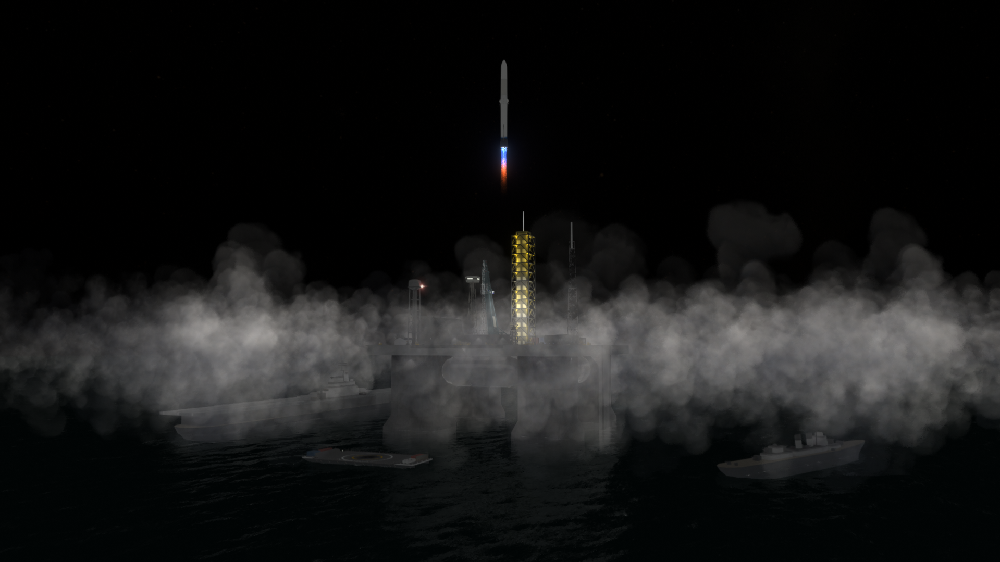
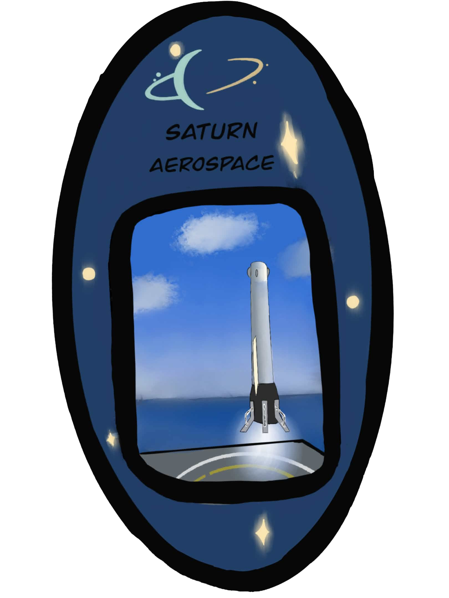
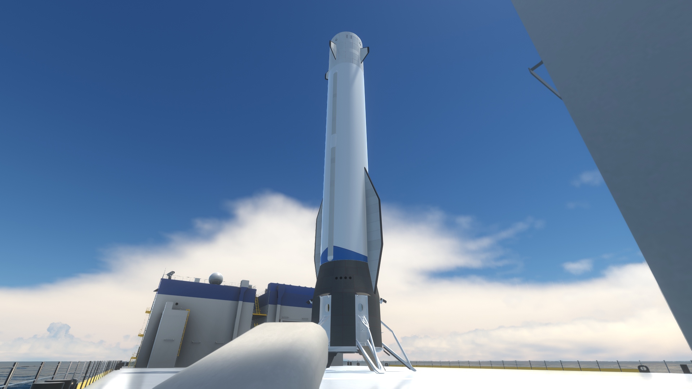
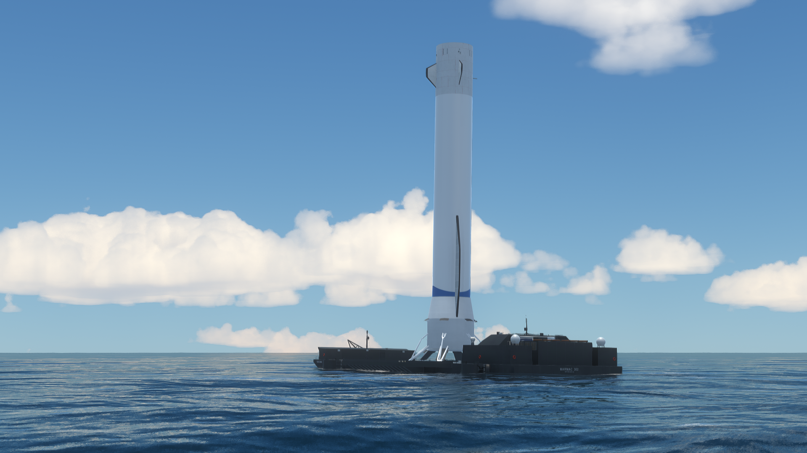
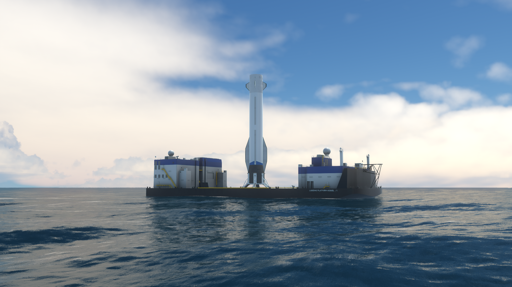
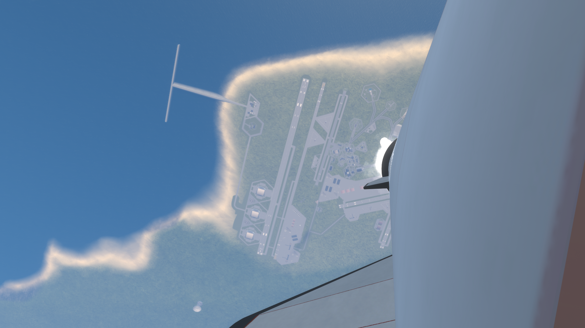
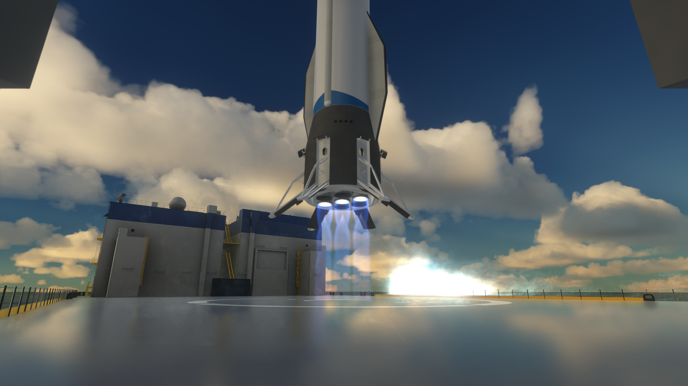
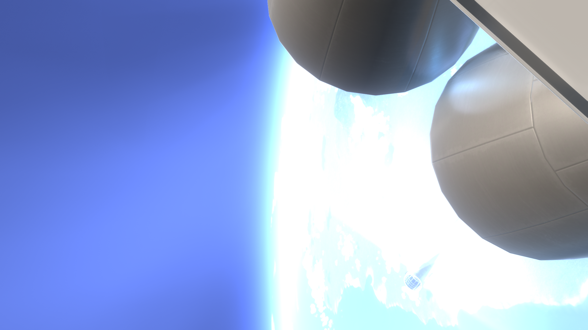

Class
Reusable heavy-lift launch vehicle designed for orbital missions and controlled booster return.

Vehicle
A reusable Saturn Aerospace launch vehicle built around ocean operations, clean ascent, and confident booster recovery at sea.
Vehicle Identity
Daphnis brings a different kind of presence to the Saturn Aerospace fleet. It is tall, clean, and elegant, but the defining image is not a land pad. It is the ocean platform, the long horizon, and the feeling of a launch system designed to work comfortably at sea.
That gives Daphnis its own role inside the fleet: a reusable heavy launcher with a calmer, more maritime identity, where precision recovery is just as important to the story as liftoff.

Class
Reusable heavy-lift launch vehicle designed for orbital missions and controlled booster return.
Operations
Launch and recovery visuals center around offshore platforms, support vessels, and open-sea range work.
Character
Bright blue plume light, broad fairing lines, and a booster silhouette that stands out immediately.
Role
A dependable reusable fleet vehicle built to make heavy launch and return operations feel refined.

Launch Site
Daphnis feels tied to the sea from the moment it appears on deck. The offshore structures, support equipment, and clear water horizon give the whole system a distinct atmosphere that separates it from the rest of the fleet.
Instead of presenting launch as a single dramatic moment, Daphnis reads like an operation: platform prep, calm positioning, ignition, ascent, and a return path that leads back to water.
Launch
The launch shots give Daphnis a very sharp identity: a bright engine plume, a clean white body, and a fast departure that feels efficient rather than chaotic. Even at night, the vehicle stays readable and deliberate, with the tower and support vessels fading behind the smoke.
That combination of scale and control makes Daphnis feel like a polished reusable system rather than an experimental concept. It looks ready, repeatable, and fully part of the Saturn Aerospace fleet.


Recovery
Daphnis does not feel complete without its recovery story. The ocean platform shots give the booster a clear destination after flight, turning the mission into a full cycle rather than a one-way launch.
Standing on deck after return, the booster looks calm, stable, and ready to be turned around for another mission. That is the page's core message: Daphnis is built to work, recover, and come back into service.
Flight View
The onboard and close-up angles make Daphnis feel composed in flight. Looking back toward the coast, the launcher still reads as controlled and balanced, with the payload section and booster body holding a very recognizable shape throughout ascent.
That steady visual character is what makes Daphnis fit the fleet so well. It is cinematic, but not wild. Strong, reusable, and built around a very clear operational rhythm.

Gallery


Mission Patch
The Daphnis patch captures exactly what makes the vehicle memorable: ocean operations, an upright returned booster, and a fleet identity that feels distinct without leaving the Saturn Aerospace visual language behind.
Patch artwork by April.